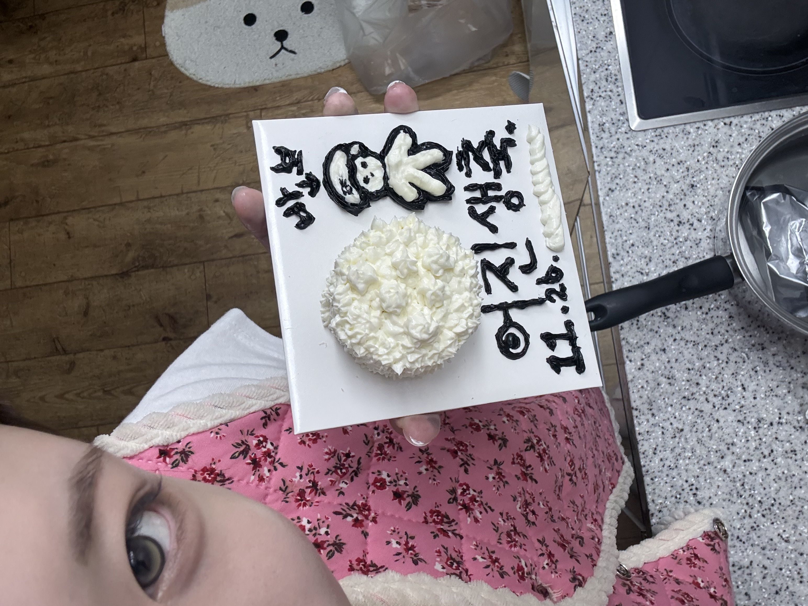
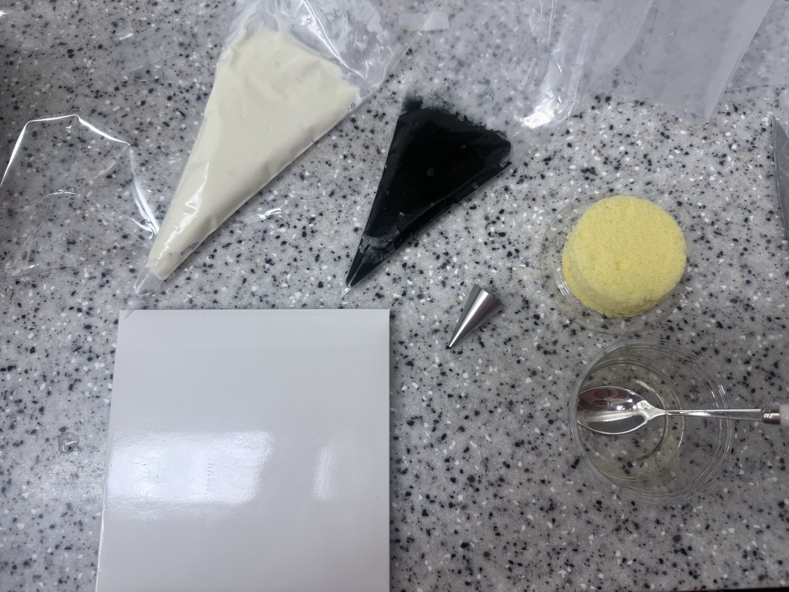
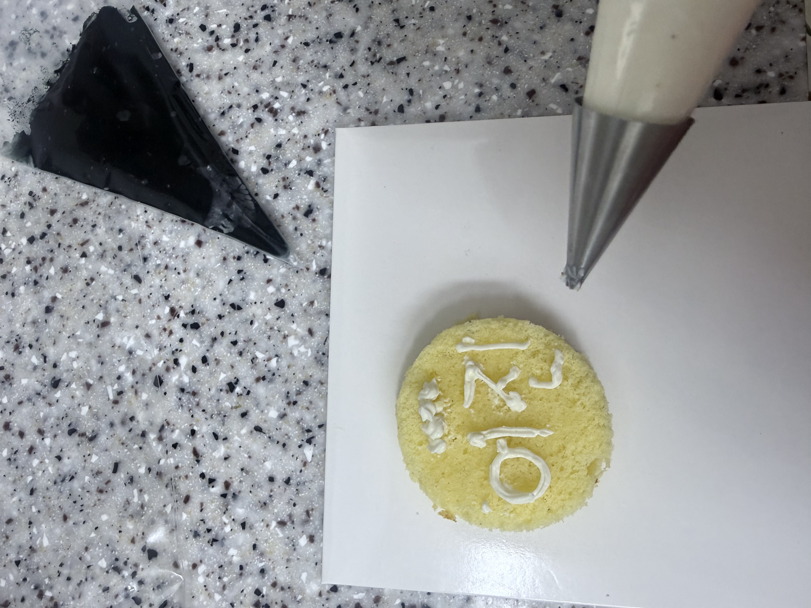
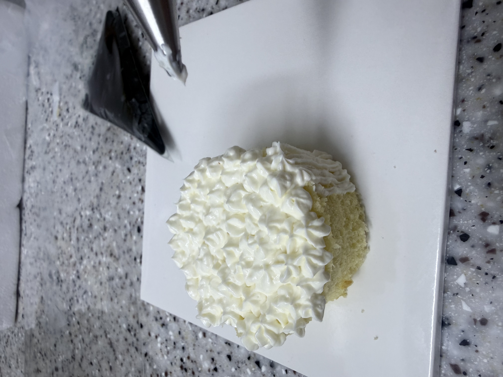
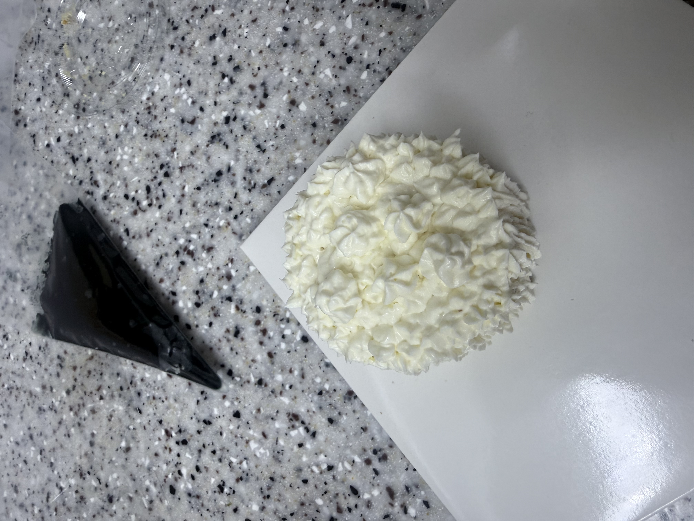
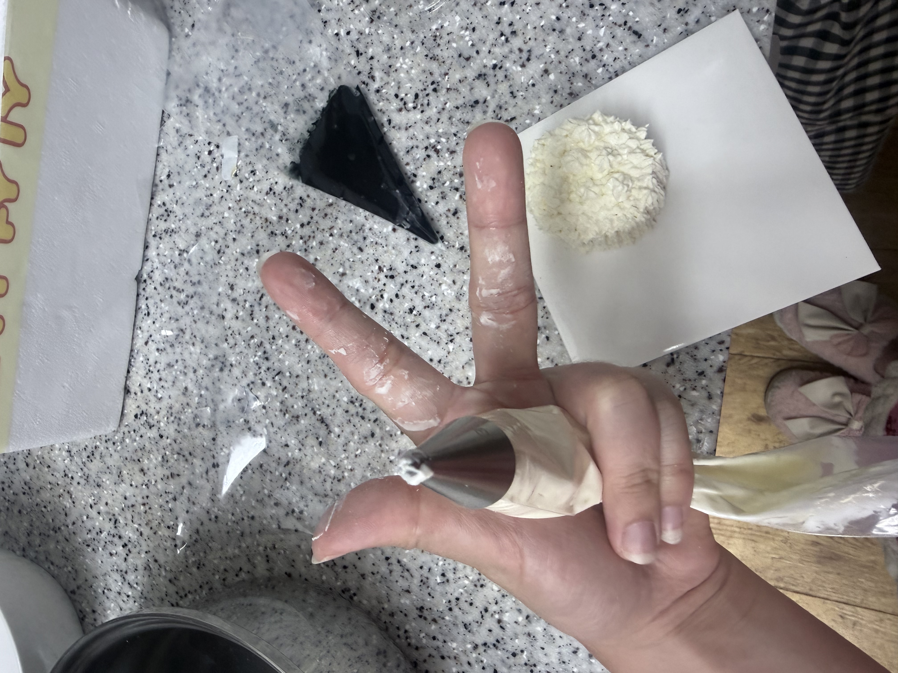
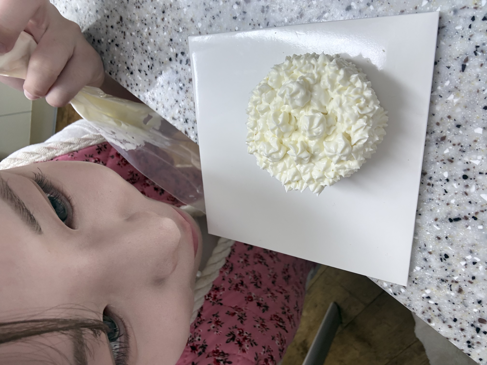
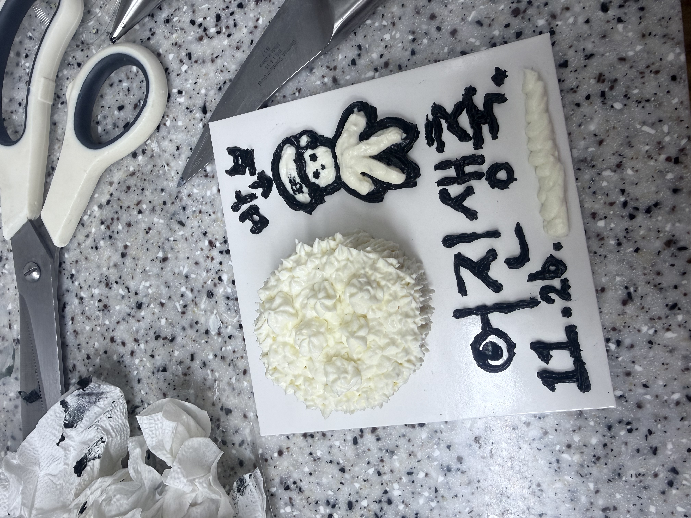

어진이에게
우리 어지니 생일 너무너무 축하해 🎂💗
어진이 생일 때 못 만나니까 이번 면회가 우리만의 생일파티야!! 비록 생일 당일에 옆에 있어 주지는 못하지만 누구보다 제일 많이 축하해 주고 싶은 마음은 알지?
혜미가 많이 많이 사랑해 ♡
그리구 어지니 몰래 케이크 만들기 해떠 ㅎㅎ 놀라찌?! 우리 어지니 세상에서 제일 행복한 생일 만들어 주고 싶어서 열심히 준비해써. 어지니 주려고 이쁜 꽃도 샀지롱 🌷 이거 다 혜림이 사랑이 듬뿍 담긴 거니까 감동받아야 대!!
어진이랑 함께하는 시간이 혜림이한테는 너무너무 소중해. 그냥 같이 밥 먹고, 장난치고, 손잡고 돌아다니는 평범한 순간들도 어진이랑 함께라서 특별하고 행복한 것 같아.
가끔은 떨어져 있는 시간이 너무 길게 느껴지고 보고 싶어서 속상할 때도 있지만, 그만큼 우리 어지니를 많이 사랑하고 있다는 뜻이겠지? 그래도 우리 이렇게 서로 아끼고 사랑하면서 잘 기다리고 있는 거 너무 기특하지 않아? ㅎㅎ
어진이가 군대에서 힘든 날도 많을 텐데 항상 씩씩하게 잘 버텨 줘서 고마워. 혜림이가 매일 옆에서 안아 주고 예뻐해 주고 싶은데 그러지 못해서 아쉬워. 그래도 어진이한테는 언제나 혜림이가 있다는 거 잊지 마!! 힘든 날에도 기쁜 날에도 항상 어진이 편이 되어 줄게.
앞으로도 매일매일 혜림이랑 즐겁게 살자. 우리 아직 같이 해 보고 싶은 것도 많고, 가 보고 싶은 곳도 많고, 만들어 갈 추억도 엄청 많잖아!! 지금 못 하는 것들 전역하면 하나씩 다 하면서 행복하게 지내자.
내년 생일부터는 꼭 당일에 딱 붙어서 노는 거야!! 아침에 눈뜨자마자 제일 먼저 생일 축하해 주고, 하루 종일 옆에 붙어서 맛있는 것도 먹고 데이트도 하구 싶어. 앞으로 어진이 생일은 매년 혜림이가 제일 신나게 축하해 줄 거야 ㅎㅎ
그리구 우리 벌써 700일도 넘었다니!! 너무너무 축하해 💗 처음 만났을 때는 우리가 이렇게 오래 사랑하게 될 줄 알았을까? 700일이 넘는 시간 동안 내 옆에 있어 줘서 고맙고, 수많은 사람들 중에 혜림이 남자친구가 되어 줘서 고마워.
우리가 항상 좋기만 했던 건 아니지만 그래도 서로를 놓지 않고 여기까지 온 게 너무 소중해. 앞으로도 가끔 투닥거리고 서운한 날이 있겠지만 그럴 때마다 서로 조금씩 더 이해해 주고, 지금보다 더 예쁘게 사랑하자.
혜림이는 시간이 지나도 어진이랑 장난치고 웃는 게 제일 좋고, 어진이한테 사랑받는 게 제일 행복해. 나중에 우리가 지금을 돌아봤을 때 군대 기다리던 시간도 다 추억이 되어 있겠지? 그때는 우리 둘이 꼭 붙어서 그동안 못 했던 사랑까지 잔뜩 하자.
얼른 군대 전역하구 우리 둘이 행복하게 살자. 어진이의 스물몇 번째 생일도, 앞으로 다가올 수많은 생일도 혜림이가 함께하고 싶어. 어진이가 나이 들어서 할아버지가 되어도 혜림이가 옆에서 생일 축하 노래 불러 줄게 ㅋㅋㅋ ♡
우리 어지니 태어나 줘서 고맙고, 혜림이 만나 줘서 고맙고, 이렇게 사랑할 수 있게 해 줘서 고마워
앞으로도 지금처럼 서로의 가장 친한 친구이자 가장 든든한 편이 되어 주자.
생일도, 우리 700일도 너무너무 축하해.
세상에서 우리 어지니가 제일 좋아!!
혜림이가 어제보다 오늘 더, 오늘보다 내일 더 많이 사랑할게.
내 사랑 어지니 생일 축하해. 오래오래 혜림이랑 사랑하자 ♡